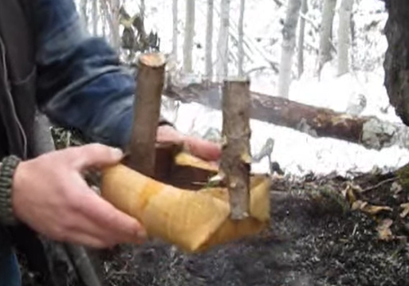
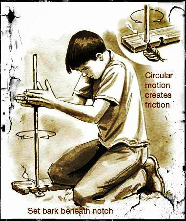
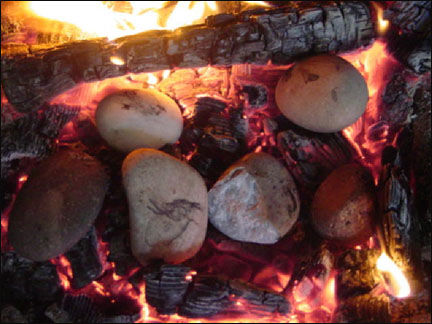

Step 1: Make a Bowl
In order to boil your water, you will need to make a container for it.
In order to do this, take your knife and find a tree, preferably living
or recently dead. Then:
- Cut a line in the bark parallel to the ground - about half the circumfrence of the tree
- About a foot above or below that line, cut another parallel to it
- Connect the two lines with lines perpendicular to the ground to make a rectangle
- Retrace the lines with the knife to make sure you've cut through the bark
- Slide your knife under the bark rectangle to loosen it
- Once loosened, carefully peel the bark off in 1 piece like peeling off a sticker
Nice! Now we need to make primitive clothespins!
- Find some (4) twigs (or cut some off the tree) about the length of and a little thicker than clothespins
- Use your knife to cut a thin slit down the center of one end of the twigs that go about half
way down, making a primitive clothespin
Great! Now, the bowl!
- put a finger on either side of the corner of the bark rectangle and pinch it up to make a
a raised wall - then fasten it like that with a clothespin
- Repeat this for the other 3 corners and adjust as necessary: You should get a square bark bowl!
Note: the maker of this bowl folded the corners in further and only used 2 clothespins:
This is also a fine way to make the bowl

Step 2: Make a Fire
In order to boil your water, you will also need a fire - this can easily
be achieved with a lighter or other means, but we are assuming you only have
a knife!
- Find some sticks for kindling
- Find some bigger chunks of wood to keep the fire alive
- Use your knife on a stick and peel it like potato - cutting off long
thin strips of wood for kindling
- Find a flat piece of wood (or shave one to be flat) to use as base board
- Find another stick relatively straight and shave off any imperfections
or places where you might get a sliver - try to get it relatively smooth
- Put your smooth stick on your base board and start twisting while moving your
hands down, slowly at first to warm it up then faster when smoke starts
- When it is smoking quickly check if there are red embers and carefully
insert the kindling if so - blow gently if needed
- As the fire grows, add more (appropriately sized) fuel
Congrats! You now have a fire! (NOTE: Do this in a safe area with adequate
distance from any fuel so you don't start a forest fire)

Step 3: Hot Rocks
We are almost done! But as the more astute among you may notice, a bark
bowl is not exactly a metal pot, so how are we going to boil the water?
That's where the rocks come in!
- Find two or three rocks no bigger than baseballs
- Wash them off in your water source if you're not a fan of drinking dirt
- Slide the rocks into the fire down by the coals where it's hottest
- Wait an hour or so, you can check the rocks by shifting the coals and seeing
if they are glowing hot yet. Fetch water and make more bowls while you wait!
- Once the rocks are glowing hot, remove them using some sticks as tongs - be careful!
- Drop one or two into each bark bowls of water - it will boil the Water
almost instantly and not burn the bowl

Now you have clean drinking water!